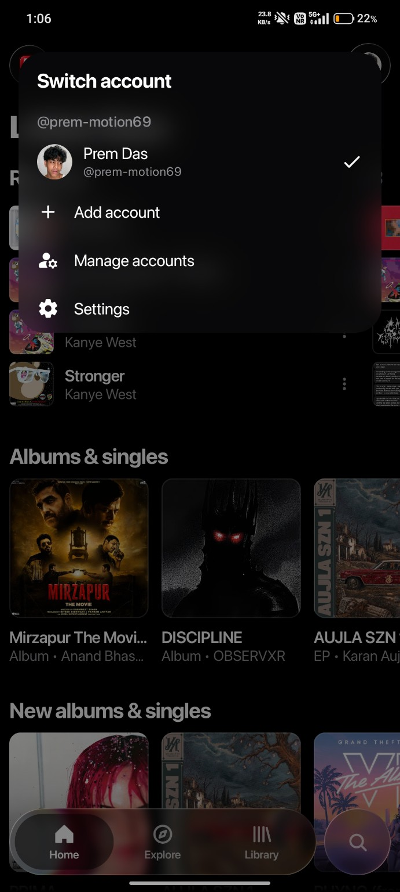
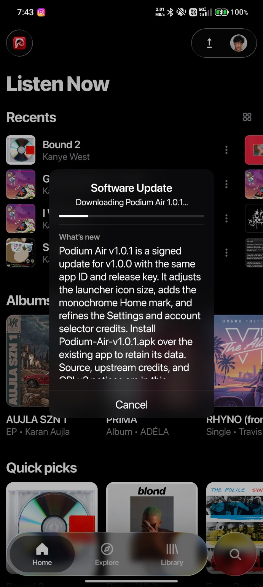

Take songs offline.
Save tracks so your music is ready even when your connection isn't.
THE OFFICIAL PODIUM AIR EXPERIENCE
Find your sound. Let it play anywhere. Podium Air brings online music, downloads and your local library together on Android.

Start with the music you love. Keep it playing while your phone is in your pocket, your screen is off, or life takes you somewhere else.
A listening home that moves with you. Browse, pick a track, and stay in the moment.
Listen Now brings recent tracks, albums and quick picks together.

Save tracks so your music is ready even when your connection isn't.
Crossfade, lyrics, a sleep timer, and controls to shape the listening experience.
Bring your local music into the same place as the tracks you discover online.
So Prem started building.
Prem tried making Podium. Twelve attempts didn't become the app Prem had in mind. Prem kept going.
THE NEXT CHAPTER
Podium made room for the music already on your phone. But Prem wanted Podium users to listen online too.
Prem coded it. Then Podium Air dropped.
Download the appFor the songs already yours. A local, offline music player with its own identity.
For the music out there waiting to be heard. Stream, discover, and download.
READY WHEN YOU ARE
Android 8.0+ Latest stable v1.0.1
Your Android browser may ask you to allow installation from this source.